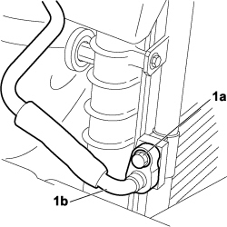
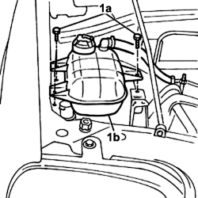

5040A60 PIPE FROM CONDENSER TO EVAPORATOR (EXPANSION PIPE) - R+R
- Path
- Procedures > 50 AUXILIARY UNITS > 5040 AIR CONDITIONING CASING AND COMPONENTS > 5040A air conditioner coolant circuit > 5040A60 PIPE FROM CONDENSER TO EVAPORATOR (EXPANSION PIPE) - R+R
- Kind
- repair procedure (removal / refitting; the operation number is the code)
- Applies to
- engines: 1.4 8v; all production periods
- Interactive page
- https://sloeber94.github.io/elrnDB-fDbl/en/#/223000152
Applies to: engines: 1.4 8v; all production periods
 Removing
Removing
 Refitting
Refitting- Position the vehicle on a lift.
- Turn the ignition key to the OFF position.
- Lift the bonnet
- Disconnect the negative battery terminal.
Description | Connector | |
|---|---|---|
- | BATTERY |
Op. 0010T84 COOLANT FOR AIR CONDITIONING SYSTEM - DEHYDRATE AND RECHARGE
Op. 7055B08 GRILLE (ONE) ON FRONT BUMPER - R.R
Op. 5040B14 AIR CONDITIONING SYSTEM MULTI-STAGE PRESSURE SWITCH - R+R
1. Unscrew nut (1a) and disconnect pipe fitting (1b) from the condenser to the evaporator.

Applies to: engines: 1.4 8v; all production periods
1. Undo the fixing bolts (1a) and move the expansion tank (1b) aside.

Applies to: engines: 1.4 8v; all production periods
1. Undo the nut (1a) and disconnect the connector (1b) from the expansion valve (1c).
2. Remove the pipe from the condenser to the evaporator.
Applies to: engines: 1.4 8v; all production periods
Refitting
Removing- Check that the pipe from the condenser to the evaporator is not damaged and that there are no cracks that could compromise the seal.
- Place the pipe from the condenser to the evaporator in position.
- Secure the pipe with nuts, evaporator side and condenser side.
- Position the expansion tank and secure with bolts.
Op. 5040B14 AIR CONDITIONING SYSTEM MULTI-STAGE PRESSURE SWITCH - R+R
Op. 7055B08 GRILLE (ONE) ON FRONT BUMPER - R.R
Op. 0010T84 COOLANT FOR AIR CONDITIONING SYSTEM - DEHYDRATE AND RECHARGE
- Connect the negative battery terminal.
Description | Connector | |
|---|---|---|
- | BATTERY |